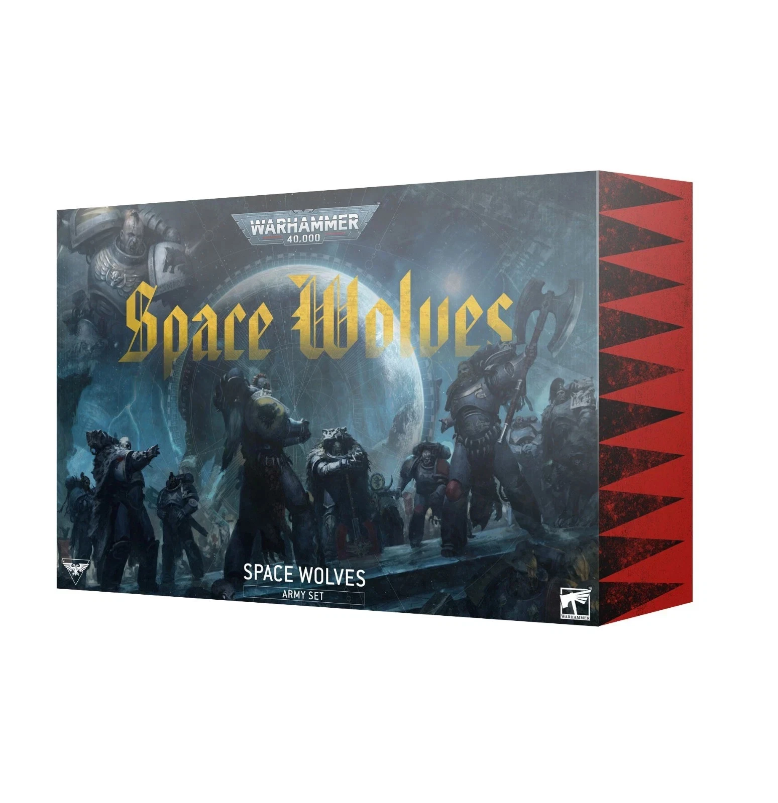

Space Wolves Army Set
The Space Wolves Army Set is a limited-edition boxed set from Games Workshop featuring new miniatures and extensive lore content. It is designed to form the core of a Space Wolves force or expand an existing collection of the Sons of Russ.
The set includes 28 new Citadel miniatures, featuring a mix of savage veterans and brutal recruits: 10 Blood Claws, 10 Grey Hunters, 3 Wolf Guard Headtakers, 1 Wolf Guard Battle Leader, and 1 Wolf Priest. The models offer extensive customization with multiple weapon and head options.
In addition to the miniatures, it contains the Codex Supplement: Space Wolves, a 104-page hardback book detailing updated background lore, rules, and crusade content covering their latest campaigns on the war-torn world of Armageddon.
The Space Wolves are an untamed, feral breed hailing from the death world of Fenris. Burdened by their Primarch Leman Russ's unique gene-seed, this army embodies a primal, animalistic hunting desire and predatory instincts that manifest as savage battle rage on the battlefield.
Contents
Here is a list of the items featured in the Space Wolves Army Set
- 1x Wolf Guard Battle Leader
- 1x Wolf Priest
- 3x Wolf Guard Headtakers
- 10x Blood Claws
- 10x Grey Hunters
- Codex Supplement: Space Wolves
- Datasheet Cards and Transfer Sheet